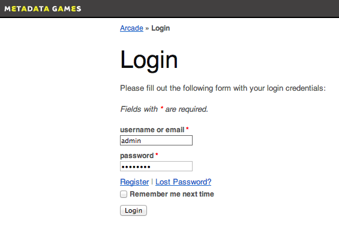
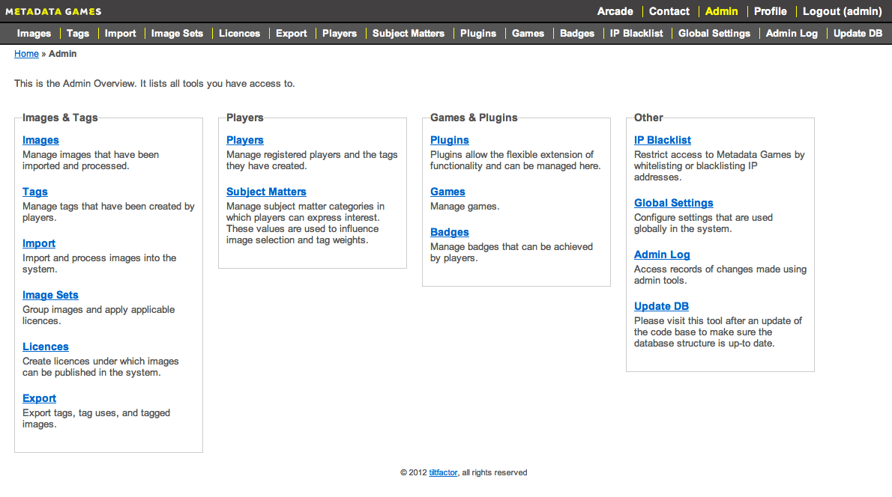
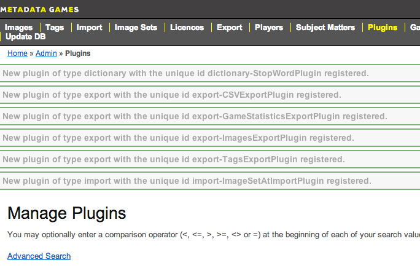
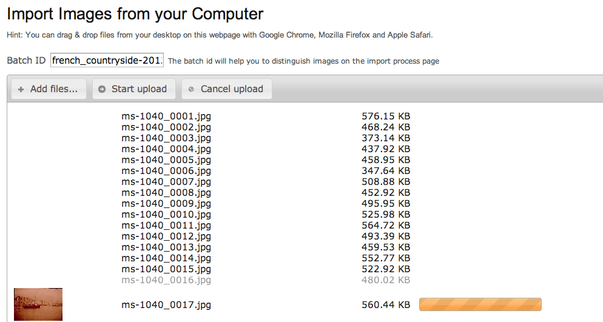
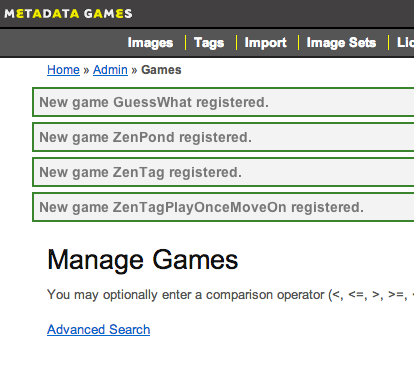

Last modified: 12/11/2012
Once Metadata Games is installed, it's time to configure your system:
Gain access to all admin tools by signing in with your newly-created account at
[yoursite.com]/www/index.php/user/login

You can access the "Admin Overview" page by clicking on "Admin" in the Metadata Games navigation bar at the top of the page. This page contains links to all of the available tools. These links also appear in the Admin navigation bar, underneath the Metadata Games navigation bar.

NOTE: For detailed information about all admin tools, see the Site Administration guide in the Metadata Games documentation/ folder.
From the Admin Overview, click Plugins to register and configure plugins settings.
For more information on plugins options, see the Plugin Default Settings help guide in the Metadata Games documentation/ folder.

Next, create image sets and import images from your server or local machine by using the "Image Sets" and "Images" tools.

Note: Importing images is a two-step process: Import and Process
NOTE: All images imported into the system must be in the JPEG (.jpg or .jpeg) format. We highly recommend that each image is no larger than 1.5 MB in size, due to limits in a typical PHP configuration. Furthermore, we recommend that a minimum of 100 images are imported and processed into the system before starting gameplay.)
Finally, use the "Games" tool to activate and customize the games you want to use. For information about specific games and their default settings, view the Game Default Settings help guide in the Metadata Games docuementation/ folder.

Your system setup is complete. Go to the Arcade and play!